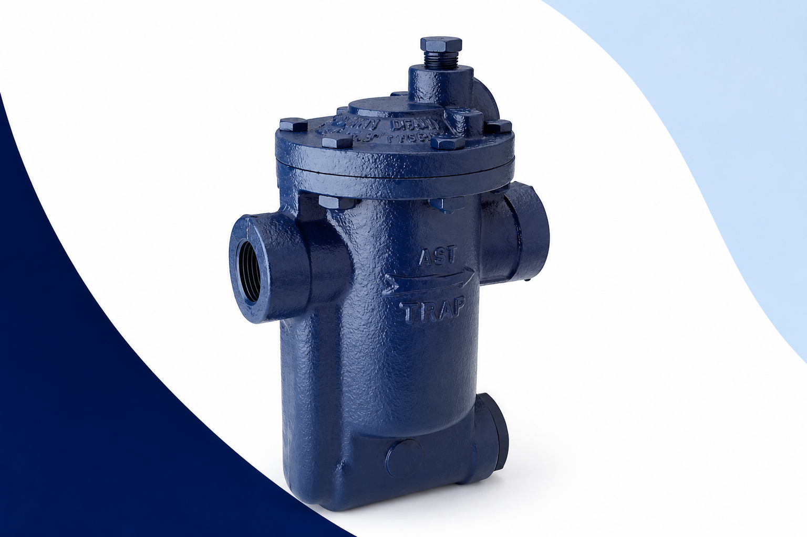
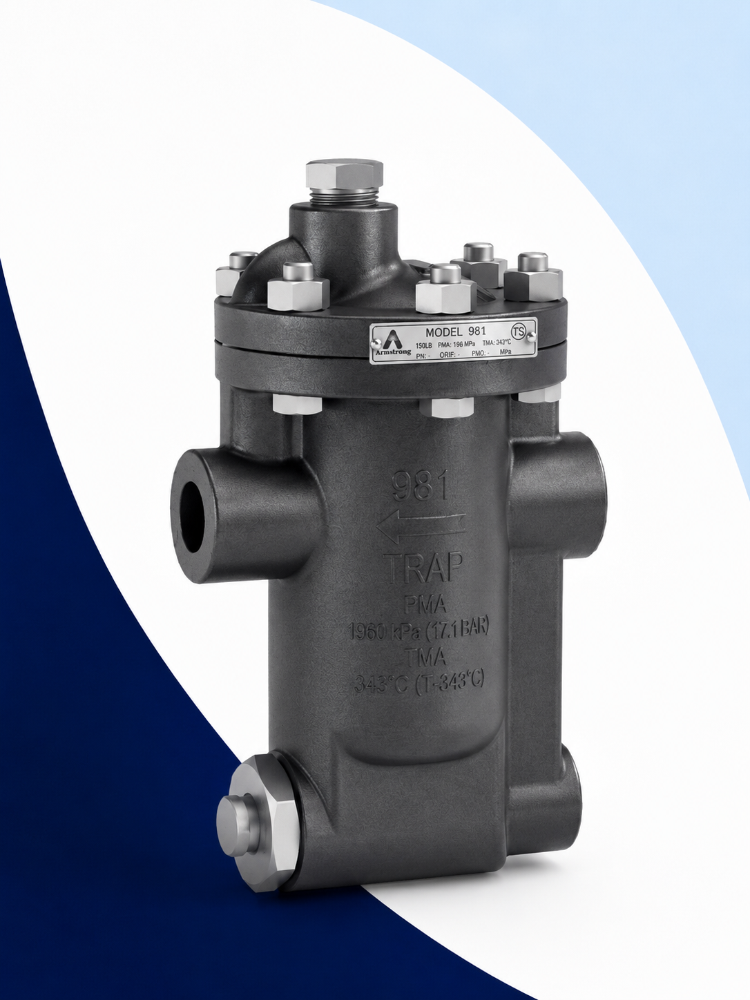
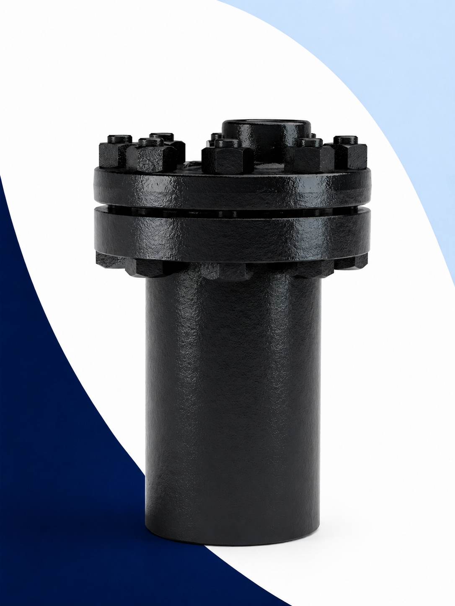

Trampas de Vapor Armstrong
Suministro de trampas de cubeta invertida, TVS, flotador y termodinámicas para aplicaciones industriales.
¿Qué es una Trampa de Vapor?
Una trampa de vapor es un dispositivo diseñado para eliminar condensado, aire y gases no condensables sin desperdiciar vapor útil del sistema.
Defany Industrial suministra trampas de vapor Armstrong para drenaje eficiente de condensado y gases no condensables en sistemas de vapor industriales. Contamos con las series más utilizadas en planta, refacciones originales y asesoría técnica para la correcta selección del equipo.
Beneficios del uso correcto
- Mayor eficiencia energética
- Menor consumo de combustible
- Reducción de golpe de ariete
- Protección de equipos
- Mayor vida útil de la instalación

Trampas de Cubeta Invertida
La trampa de cubeta invertida es la tecnología más utilizada en la industria para drenaje de condensado. Su diseño robusto y simple la convierte en la opción preferida para aplicaciones industriales severas con vapor.
Resistencia al golpe de ariete
Diseño robusto para aplicaciones industriales severas.
Mínima pérdida de vapor
Mayor aprovechamiento energético en todo el sistema.
Manejo de aire y CO₂
Excelente durante arranques y operación continua.
Resistencia a suciedad
Ideal para ambientes industriales exigentes.
Pocas partes móviles
Menor mantenimiento y mayor disponibilidad.
Alta confiabilidad
Una de las tecnologías más utilizadas en la industria.

Serie 200
Trampas de Cubeta Invertida Verticales
La Serie 200 es una de las líneas más utilizadas para drenaje de condensado en aplicaciones industriales. Su diseño vertical permite una instalación sencilla y un funcionamiento confiable durante largos periodos de operación.
Modelos
Medidas disponibles
Características técnicas
- Hierro fundido
- Conexión NPT
- Hasta 250 PSI
- Hasta 450°F
- Capacidades hasta 20,000 lb/hr
Serie 800
Trampas de Cubeta Invertida Horizontales
La Serie 800 ofrece instalación horizontal con jerarquía comprobada en aplicaciones industriales de proceso. Excelente comportamiento ante contrapresión y diseño para fácil mantenimiento en planta.
Modelos
Medidas disponibles
Características técnicas
- Instalación horizontal
- Hierro fundido
- Hasta 250 PSI
- Capacidades hasta 20,000 lb/hr
- Excelente comportamiento ante contrapresión
- Fácil mantenimiento
TVS 800 – Estaciones Trampa-Válvulas
Las estaciones TVS integran trampa y componentes de aislamiento en una solución compacta que simplifica instalación, inspección y mantenimiento.
Modelos disponibles
Beneficios
- Menor espacio en planta
- Fácil mantenimiento e inspección
- Menor tiempo de instalación
- Mayor seguridad operativa
Refacciones para Trampas de Vapor
También suministramos refacciones para trampas Armstrong, permitiendo extender la vida útil de los equipos y reducir costos de reemplazo. Solicite por modelo o envíe una muestra para identificación.
Otras Trampas Disponibles
Además de las Series 200 y 800, suministramos otras líneas Armstrong para aplicaciones específicas de presión, temperatura y tipo de proceso.

Cubeta invertida horizontal con filtro integrado para protección adicional contra suciedad.

Trampas en acero fundido para condiciones de mayor presión y temperatura.

Trampas de alto desempeño fabricadas en acero aleado para servicio severo.

Solución compacta y robusta para líneas de vapor, tracing y aplicaciones industriales generales.

Descarga continua de condensado y excelente eliminación de aire durante arranque.
Cómo Pedir una Trampa de Vapor
Para cotizar correctamente una trampa de vapor necesitamos los siguientes datos. Esta información nos permite identificar el modelo adecuado para su aplicación.
| Dato requerido | Opciones comunes |
|---|---|
| Tipo de trampa | Cubeta Invertida, TVS, Flotador, Termodinámica |
| Medida de conexión | ½", ¾", 1", 1¼", 1½", 2", 2½", 3" |
| Tipo de conexión | NPT, Bridada |
| Orientación | Vertical, Horizontal |
| Presión de trabajo | PSI o BAR |
- Cubeta Invertida
- NPT
- 1½"
- Horizontal
- 125 PSI
TRAMPA DE VAPOR CUBETA INVERTIDA DE 1½"
CONEXIÓN NPT HORIZONTAL
PARA UNA PRESIÓN DE TRABAJO DE 125 PSI
Preguntas Frecuentes
La Serie 200 tiene conexión vertical y la Serie 800 conexión horizontal. Ambas son trampas de cubeta invertida con características similares, pero su orientación de instalación determina cuál es la adecuada para cada aplicación.
Sí, suministramos refacciones para diversas series Armstrong: cuerpos, cabezas, cubetas, mecanismos, válvulas, asientos, gaskets y empaques. Solicite por número de modelo o envíe fotografías del equipo.
Sí. Con fotografías del equipo instalado, la placa de datos y las medidas de conexión podemos identificar el modelo y serie correspondiente para ofrecerle la trampa o refacción correcta.
Tipo de trampa, medida de conexión, tipo de conexión (NPT o bridada), orientación (vertical u horizontal) y presión de trabajo en PSI o BAR. Si conoce el número de modelo, eso simplifica la cotización.
Sí. Podemos ofrecer equivalencias y reemplazos directos con base en el modelo instalado, fotografías o medidas del equipo actual. Contamos con las series más solicitadas en inventario.
¿Necesita una Trampa de Vapor o una Refacción?
Nuestro equipo puede ayudarle a seleccionar la trampa adecuada para su aplicación industrial. Contamos con trampas Armstrong en las series más utilizadas, refacciones y asesoría técnica.